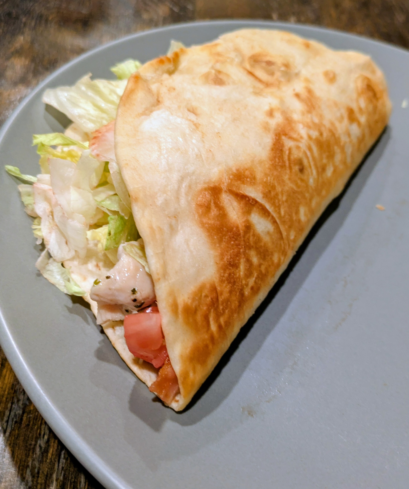

Chicken Bacon Ranch Quesadillas

Description
These CBR quesadillas are a recipe of my own making inspired by tropical smoothie. Although not a traditional quesadilla style they are still lightly pan fried in butter and can be loaded down with as much cheese as you can handle. If you're looking for something that feels healthy and will fill you up this is a great choice.
Ingredients
- Tortillas
- Chicken
- Bacon
- Ranch
- Cheese
- Tomato
- Lettuce
Steps
- Take your chicken and bacon and cook them however you prefer, we usually put our bacon in the oven and pan sear our chicken
- While those are cooking take out your tortillas and lay them flat on a plate then put down a layer of ranch
- Once the bacon is finished break it into bite size pieces and add it on top of the ranch you just added
- Next add your cheese to the tortilla and fold it in half before adding them to a pan preheated to medium heat with a little bit of butter
- Fry them on both sides until they are light brown or your desired crispness
- Lastly open them up and add your chicken, tomato, and lettuce. Fold over and enjoy your delicious meal
Home